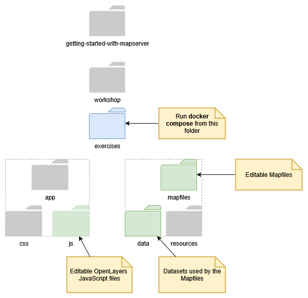

Workshop Introduction
Overview
This workshop is divided into the major topics listed below.
-
Introduction. An introduction to MapServer and the software used for the workshop. This includes Docker, OpenLayers, and Apache.
-
The Mapfile. A Mapfile is MapServer's configuration file. It points to the data the Map will display, it defines how the data will be displayed, and how the data will be served to client applications such as an Internet browser. This first set of exercises will help to get familiar with the structure, keywords, and syntax of a Mapfile.
-
MapServer Inputs. These exercises show what type of data can be used as inputs into MapServer. Both vector data and raster data are covered.
-
MapServer Outputs. These exercises show how MapServer can publish data. When first created MapServer was used to produce map images, but now it can serve data out in a large number of open geospatial formats. Focus is given to OGC standards as these are free, open and interoperable.
-
Advanced topics. These are a collection of miscellaneous exercises that cover a wide range of MapServer functionality. Selected exercises will be chosen based on the needs to the workshop participants. MapServer has over 25 years of development and features so new topics will be added over time.
Workshop Outline
Below is a rough timeline for how the timings of the 4-hour workshop, with a 15 minute break. These can be adapted based on the needs of the participants.
- 0h00 - 0h30 - Introduction to the workshop, Docker setup and tests
- 0h30 - 1h30 - Mapfile exercises
- 1h30 - 2h00 - Inputs
- Break (15 minutes)
- 2h15 - 3h00 - Outputs
- 3h00 - 3h15 - Brief Overview of Advanced topics
- 3h15 - 3h45 - Custom Mapfile creation
- 3h45 - 4h00 - Questions and conclusions
Test the Docker Compose config
Before making any changes, we will make sure that the initial Docker Compose setup provided to you is actually working. The configuration file for Docker Compose is found at the following location:
workshop/exercises/docker-compose.yml
Test the workshop configuration
- In a terminal shell navigate to the workshop folder and type the following commands:
- Open http://localhost:7000 in your browser, you should see an error message!
- Close by pressing
CTRL-C
Displaying your First Map
- Ensure that you have MapServer setup and running at http://localhost:7000.
- Now try opening the following MapServer URL in your browser - http://localhost:7000/?map=/etc/mapserver/countries.map&mode=map
Note
You may also run the Docker container in the background (detached) as follows:
Folder Structure
Key folders are:
workshop/exercises/mapfiles- the location of all the Mapfiles used in the workshopworkshop/exercises/mapfiles/data- datasets used in the Mapfilesworkshop/exercises/app/js- the JavaScript files used in the workshop

The full workshop folder structure is shown below: